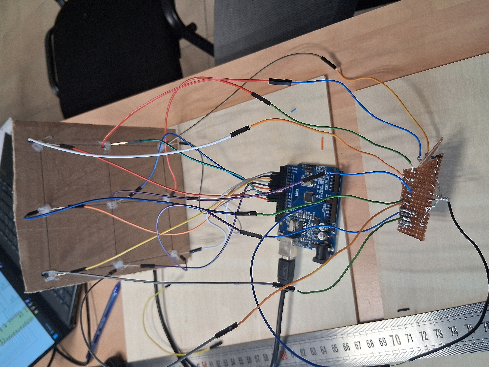
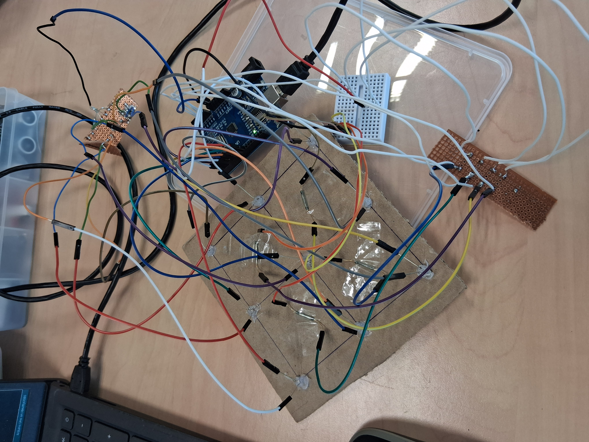

SmartChess — A Robotic Chessboard
Sensors detect the pieces • Our custom engine thinks • A robot moves the pieces from below. Built for a smooth, reliable over‑the‑board experience.

1. Chess Engine Architecture (0x88)
A small, readable engine built on the 0x88 board model: compact indexing, fast bounds checks, simple move generation, and a reversible state with perft validation.
For fast, simple move generation I use the classic
0x88 board representation. The idea: store
the board in a 128‑element array (8 ranks × 16 files).
Playable squares are indices where
(sq & 0x88) == 0. Any step that crosses the
board boundary flips bit 0x88, so out‑of‑bounds is a single,
branch‑cheap check.
2. Piece Detection & LED Display
A grid of magnetic sensors under the board tracks piece positions, while an LED matrix provides intuitive visual feedback.
Reed Sensor-Based Detection
The system uses 64 reed sensors (Hall effect) placed under each square of the 8x8 grid. A small neodymium magnet is embedded in the base of each chess piece. When a piece is placed on a square, the sensor detects the magnetic field, registering the piece's position. This method provides a reliable, binary state of the entire board at any moment, which is essential for the game logic.
LED Matrix Display
Visual feedback is handled by 9x9 LED matrices, driven by Adafruit IS31FL3731 drivers. This system can:
- Indicate possible moves for a selected piece.
- Highlight the last move made by the opponent or the robot.
- Display suggestions from the AI.
- Create visual effects for special events like captures, promotions, or checkmate.
The matrices are connected to the main controller via a TCA9548A I2C multiplexer, allowing multiple matrices to be controlled from a single I2C bus.
3. Electronics Prototyping (2×2 PoC)
We built a 2×2 proof-of-concept tile to validate sensing, multiplexing, and firmware timings before scaling to the full 8×8 chessboard.
2×2 Reed + LED Proof
The PoC tile uses 9 LEDs arranged in a 3×3 matrix with four reed switches underneath the playable squares. Each LED shares rows/columns via current-limited resistors so the Arduino Mega can multiplex the output without an external driver.



The reed sensors sit beneath each square with small neodymium magnets embedded in the pieces. To minimize wire count, the sensors are wired in a grid with diodes preventing ghosting, similar to a keyboard matrix.


4. Full 8×8 Board Architecture
The production board is orchestrated by a Raspberry Pi 5, which centralizes game logic, AI, and communication with peripherals, including a dedicated microcontroller for robotics.
Electronics Architecture
The final architecture is built on the principles validated in the 2x2 PoC, scaled up for the full board.

- System Brain: A Raspberry Pi 5 running Raspberry Pi OS and the main Python script. It handles the AI, game logic, and communicates with other components.
- LED Control: IS31FL3731 LED matrices are connected to the Pi via a TCA9548A I2C multiplexer for individual addressing.
- Piece Detection: The 64 reed sensors are read via MCP23017 I/O expanders, which communicate with the motor controller or the Pi.
- Motor Control: An ESP32 microcontroller receives motion commands from the Pi via a serial (UART) link. It drives the stepper motors using A4988 or TMC2209 drivers and controls the electromagnet with a MOSFET.
Software
The software on the Raspberry Pi is written in Python and uses libraries to control the I2C peripherals. The installation commands are:
sudo apt install python3-pip
pip install adafruit-circuitpython-is31fl3731 adafruit-circuitpython-tca9548a RPi.GPIOThe microcontroller's firmware is written in C++ (via the Arduino IDE) and handles low-level motor movements using the AccelStepper library.
Fabrication & Assembly Gallery
The physical board is built from laser-cut MDF, with precision-milled pockets for reed sensors and recesses for LEDs. Each piece is modified to embed a neodymium magnet in its base, ensuring reliable detection.


5. Mechanical Platform & Manipulator
A two-axis XY gantry system, concealed beneath the playing surface, moves the pieces precisely using an electromagnet.
Architecture & Operation
The robot is a two-axis Cartesian system (X and Y) using MGN12 linear rails and GT2 belts, driven by NEMA17 stepper motors. This design ensures smooth and accurate movement.
- The X-axis moves a carriage horizontally.
- The Y-axis moves the longitudinal rail supporting the electromagnet.
To move a piece, the Raspberry Pi sends the start and end coordinates to the microcontroller. The robot positions the electromagnet under the source square, activates it to grip the piece, moves to the target square, and deactivates it to release the piece.
6. Game AI & Search
Our in-house 0x88 engine scales from casual play to tournament strength while keeping plans explainable for the audience.
Integration Strategy & Adjustable Difficulty
The chess engine is a C++ module embedded in the control stack, with a lightweight Python bridge that synchronizes game state. A key feature is its adjustable difficulty level, which allows tuning the AI's search depth, quiescence budget, and move randomness to match the human player's skill.
All games are logged for post-game analysis, including thinking time, evaluation swings, and the robot's travel distance.